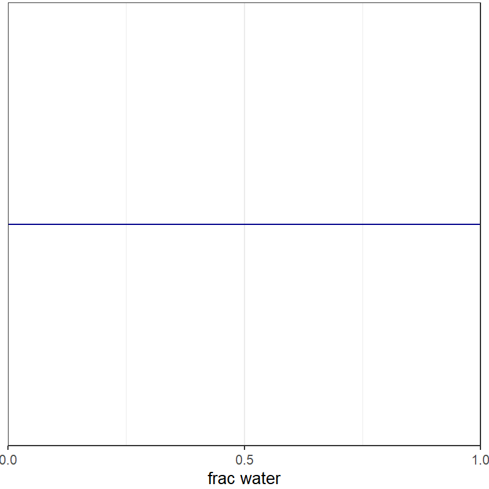

Rethinking Statistics
EES 5891-03
Bayesian Statistical Methods
Jonathan Gilligan
Class #2: Tuesday, August 30 2022
Golems and Rethinking
Statistical Tools as Golems
- Statistical tools will do what you tell them to do …
- but if you’re not careful, what you tell them to do may not be what you want them to do
- The goal of this book is to help you:
- Learn to use statistical golems wisely
- Learn to choose the right golem for the job
- Learn to engineer your own golems if the ready-to-use golems aren’t right for your job.
The Golem of Prague (Photo: Prague Post)
Hypothesis Testing
- Karl Popper (1902–1994)
- Science can never prove that a hypothesis is true
- But it can prove that an incorrect hypothesis is false
- The more false hypotheses we rule out, we narrow down the list of potentially true hypotheses.
When you have eliminated the impossible, whatever remains, however improbable, must be the truth
— Arthur Conan Doyle/Sherlock Holmes

Photo: London School of Economics
Problems with falsification
- The predictions of a hypothesis may not be as clear as many people assume.
- Depending on what other assumptions you make, two different
hypotheses may predict the same kind of data.
- If your data looks like MI, it rules out (falsifies) H1
- But if your data looks like MII, it doesn’t rule out either hypothesis.
- A given hypothesis may predict may different possible kinds of
data, depending on what other assumptions you make.
- If your data doesn’t look like MI, that doesn’t imply that it’s less likely H1 is true.
Null-Hypothesis Significance Testing
- Most statistical tests aim to rule out a null hypothesis, not to falsify the actual research hypothesis.
- Often, there’s not one unique alternative hypothesis to the null hypothesis, so even if we reject the null hypothesis, there are many other possibilities.
- Bayesian methods give us better, more powerful golems to answer
the questions we’re really interested in.
- But they’re still golems and we have to be thoughtful and careful about how to use them.
Discussion
Bayes’s Theorem
Bayes’s Theorem
- The core of this part of the course is Bayes’s theorem.
- Notation:
- Conditional probability: \(P(a|b)\) means the probability of a, given b.
- Bayes’s theorem: \[ P(H|D) =
\frac{P(D|H) \times P(H)}{P(D)}, \] where
- \(P(H|D)\) is the posterior: The probability that H is true, given that you observed D.
- \(P(D|H)\) is the likelihood: The probability that you would observe D, if H is true.
- \(P(H)\) is the prior probability of H, based on what you knew before observing D
-
\(P(D)\) is the evidence:
The probability that you would observe D, regardless whether
H is true.
- If H is binary (true or false), then \[P(D) = P(D|H) \times P(H) + P(D| \text{not} H) \times (1 - P(H))\]
Bayes’s Theorem (cont)
- We can apply Bayes’s theorem to a numbers too. For a variable x that we want to predict: \[ P(x|D) = \frac{P(D|x) \times P(x)}{P(D)}\]
- In this case, \[P(D) = \int_{-\infty}^{\infty} P(D|x) \times P(x) \mathrm{d}x,\] where the prior \(P(x)\) is a probability density function.
Sampling
Sampling
- You have a globe and want to figure out what fraction of the earth’s surface is water.
- Toss the globe in the air, catch it, and note whether your index finger is on water or land: outcomes are W and L.
- At every toss, use Bayes’s theorem to update your estimate of the fraction that is water.
First toss
- Before you toss the globe, pick a prior probability distribution for the fraction that’s water.
- Suppose we don’t know anything.
- Pick \(p \sim \text{Uniform}(0,1)\), a uniform prior:
- Toss the globe and your finger lands on water.
- Update the probability: \[ P(p|W) = \frac{P(W|p) P(p)}{p(W)},\] where p is the probability of water, and W is measuring water.
Prior:

The calculation:
\[ P(p|W) = \frac{P(W|p) P(p)}{p(W)},\]
- \(P(W|p) = p\)
- \(P(p) = 1\) (it’s a uniform distribution \[\begin{aligned} P(W) &= \int_0^1 P(W|p) P(p) \mathrm{d}p = \int_0^1 p \times 1 \mathrm{d}p \\ &= \left. (p^2 / 2) \right|_0^1 = 1/2 \end{aligned} \]
- so the posterior \(P(p|W) = 2p\)
- Use this posterior as the prior for the next toss…
Subsequent tosses
Developing a Model
Developing a Model
- Observations and parameters are drawn from probability
distributions:
- Likelihood: \(W \sim \text{Binomial}(N, p)\), where \(N\) is the total number of tosses.
- Prior \(p \sim \text{Uniform}(0,1)\)
- “\(\sim\)” means a random variable drawn from a probability distribution.
- We use the likelihood and the prior to calculate the posterior.
- We can’t easily do this with analytical math using pencil and
paper.
- Computational methods:
- Grid approximation
- Quadratic approximation
- Monte Carlo sampling
- Computational methods:
Examples
Grid Approximation
- Define a grid:
- specify a number of points to sample your function at.
- Take evenly spaced values for each parameter (e.g., the proportion of water).
- Calculate the value of the prior at each grid point
- Calculate the likelihood at each grid point
- Compute an unstandardized posterior by multiplying the prior and posterior at each grid point.
- Finally, standardize the posterior by dividing each value by the sum of all values in the unstandardized posterior.
- The more grid points you use, the more accurate your estimate will
be, but the more computer power you’ll need.
- For one parameter, a 1000 point grid is simple.
- For 2 parameters, a 1000 point grid for each of them means 1 million points.
- For 3 parameters, it means 1 billion points.
- For 30 parameters, your grid would have more points than there are atoms in the universe.
Quadratic Approximation
- Focus our attention near the part of the distribution that has the highest probability density.
- This region looks a lot like a Gaussian (normal) distribution.
- Find the posterior mode (the highest value).
- Hill-climbing algorithms
- Estimate the curvature of the posterior near the mode
- Approximate probability density as a Gaussian
- Approximate the logarithm of the probability density as a quadratic function.
- We can calculate the integral of a Gaussian easily.
Programming Models in R
Grid approximation
- Sample functions on a regular grid and approximate integrals by the sum of the samples.
# define number of points in the grid
grid_points = 200
# define grid
p_grid <- seq(from = 0, to = 1,
length.out = grid_points)
# define prior
prior <- rep(1, grid_points)
# compute likelihood at each value in grid
likelihood <- dbinom(6, size = 9, prob = p_grid)
# compute product of likelihood and prior
unstd.posterior <- likelihood * prior
# standardize the posterior, so it sums to 1
posterior <- unstd.posterior / sum(unstd.posterior) Quadratic Approximation
library(rethinking)
globe_qa <- quap(
alist(
W ~ dbinom( W + L, p), # binomial likelihood
p ~ dunif(0, 1) # uniform prior
),
data = list(W = 6, L = 3)
)Now display a summary:
## mean sd 5.5% 94.5%
## p 0.6666674 0.1571336 0.4155376 0.9177973